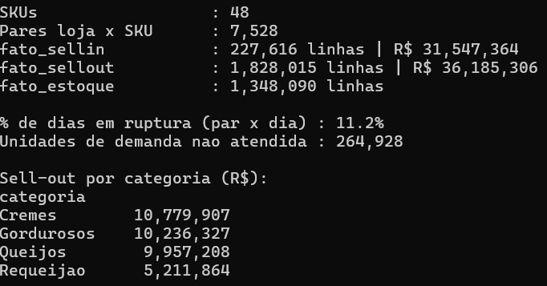
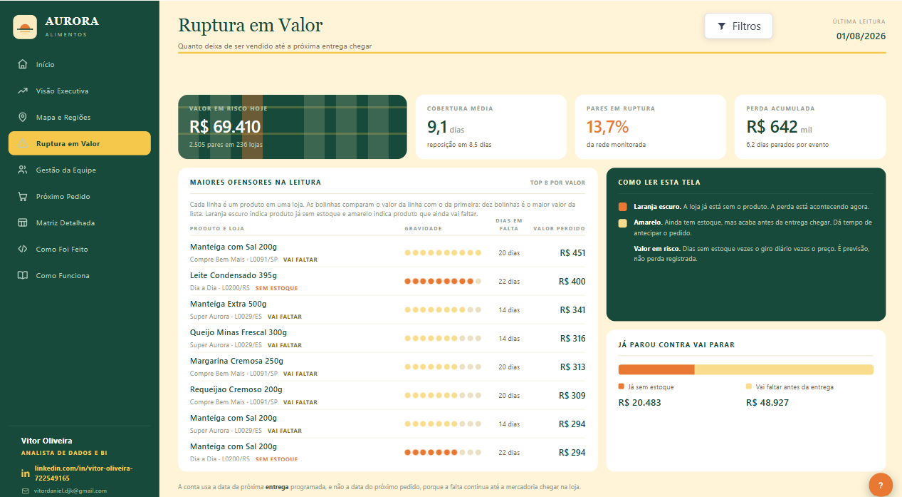
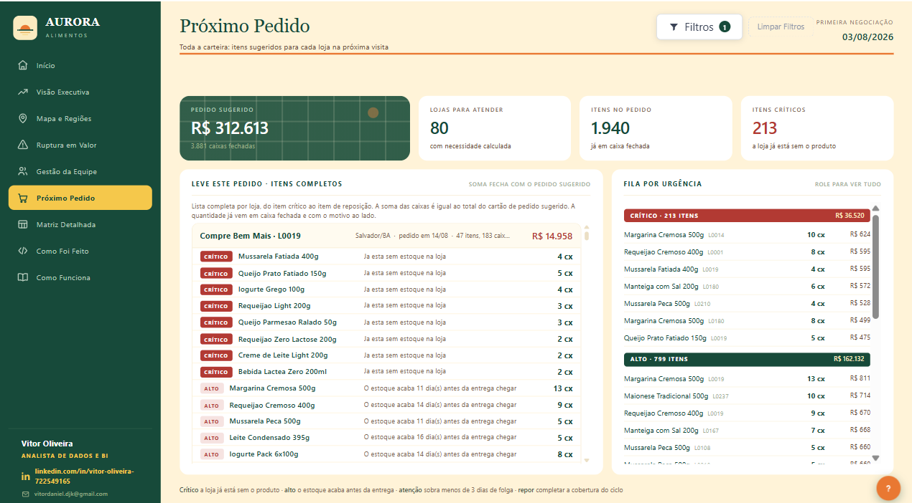
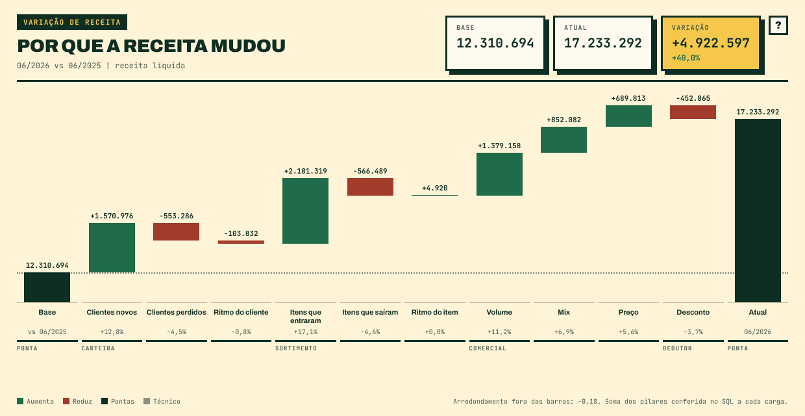
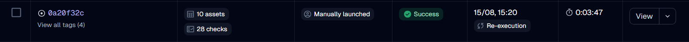
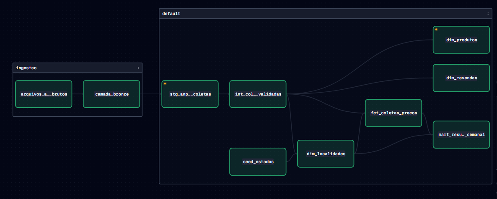

Vigor Alimentos
analista de dados e BI
fev/2024 até hoje
assistente e estagiário de BI desde mai/2021
atualizado nov/2026
receita em riscoR$ 10 miidentificada por cliente, via previsão de ruptura
fontes no hub+40sell-in e sell-out, uma verdade só
uso do servidor45% a 22%consultas e modelos otimizados
economia anualUS$ 60 milna conta do Power BI
frente
o que fiz
resultado
Hub de dados
Warehouse em estrela com mais de 40 fontes (Scanntech, Nielsen, Mtrix, Neogrid, Involves) servido em Power BI com RLS dinâmico por estrutura comercial
fonte única de sell-in
Ruptura
Regressão da venda diária por cliente cruzada com estoque estima a data de ruptura e compara com o ciclo de compra
R$ 10 mi em risco
Variação
Motor em SQL que quebra a variação da receita líquida em carteira, sortimento, volume, mix, preço e cada linha da DRE, fechando no centavo em qualquer filtro
em uso no hub
Distribuição
Power Automate consulta o hub, monta relatório em HTML por cargo e envia por e-mail e Teams, com alertas de inconsistência para o BI
sem depender de abrir painel
Governança
Ferramenta em Python que pontua modelos de Power BI antes da publicação, com hierarquia comercial sem duplicidade e histórico mensal em SQL
relatório ruim não sobe
Ciência e Tecnologia, UFABC
inglês C1
Power BI e DAX
SQL
Python
R
Power Automate
SAP HANA
Casos · resultado primeiro
O que mudou.
Quatro casos e o que está em produção na Vigor, com o número que importa em cada. O texto completo continua um clique abaixo.
vitor / casos
Usuários simultâneosCaso 03
400
no HUB comercial, na mesma capacidade P1
Consultas a menosCaso 03
97%
por dia, de 78 mil para 2 mil
Sobra na somaCaso 02
R$ 0,00
pilares contra a variação, em qualquer filtro
Coletas reais ANPCaso 04
873 mil
de 9.307 postos em 27 estados
Em produção · Vigor Alimentosanalista de dados e BI · fev/2024 até hoje
O que roda no hub comercial
Hub de dados+40fontes num warehouse em estrela (Scanntech, Nielsen, Mtrix, Neogrid, Involves), com RLS por estrutura comercial
RupturaR$ 10 mide receita em risco identificada por cliente, cruzando venda diária com estoque e ciclo de compra
Atribuição de receitano centavovariação da receita líquida em carteira, sortimento, volume, mix, preço e cada linha da DRE, em qualquer filtro
Uso do servidor22%era 45%, depois de otimizar consultas e modelos
Análises fora do Excel4Ciclo de vida, Performance, Despesas e resultados da Maratona de vendas: antes montadas à mão em Excel, hoje atualizam sozinhas no hub
Distribuiçãoe-mail e TeamsPower Automate monta o relatório de cada cargo e avisa o BI quando um dado não fecha
Distribuidora fictícia de laticínios, construída de ponta a
ponta para responder uma pergunta: quanto a ruptura custa em reais, onde,
e quem precisa agir. Do gerador de dados ao alerta no e-mail de cada cargo.
01
Geração da base
Pythonpandasnumpy
30 distribuidores, 250 lojas, 48 produtos, 7.528 pares de loja e produto
e 19 meses de sell-in, de fevereiro de 2025 a agosto de 2026: 3,8 milhões
de linhas de fato
com semente fixa. Os parâmetros verdadeiros ficam ocultos no gerador,
o que permite comparar cada estimativa com o valor que a produziu.
A ruptura não é semeada: ela emerge do estoque dia a dia, em 11,2%
dos pares de loja e produto por dia.

Volumetria por tabela e percentual de dias em ruptura, na execução do gerador.
02
Banco, esquema e contrato
PostgreSQL 18
Modelo estrela com os fatos de sell-in, sell-out, estoque e agenda
de compra, dimensões conformadas e visões materializadas para o painel.
A camada de contrato em sql/00_contrato_aurora.sql
fixa nome, tipo e chave que o resto do projeto consome.
As tabelas carregadas, com contagem de linhas e janela de datas.
03
Modelo semântico e risco
Power BIDAX
Medidas de venda, estoque, cobertura e risco sobre as visões do banco:
cobertura em dias, giro diário, dias até a entrega e estoque em unidades.
A cobertura é sempre ponderada pela demanda, nunca média simples:
9,43 dias contra 15,21, diferença que inverte uma decisão de compra.
O cálculo de risco usa a data de entrega, não a data do pedido.
Modelo e relacionamentos no Power BI Desktop.
04
Telas do painel
HTMLCSS
9 telas de ruptura e pedido geradas a partir de um só arquivo de
estilo, do resumo executivo ao próximo pedido. O visual do Power BI
renderiza resultado já calculado. Rodar Python ou R dentro do relatório
foi descartado por limite de amostragem, dependência de gateway e saída
estática.

A tela de ruptura em valor, e à esquerda o menu com as telas.
Cada série de loja e produto é classificada por ADI e CV², segundo
Syntetos e Boylan, e roteada para AutoETS, CrostonOptimized ou
SeasonalNaive, com o modelo campeão escolhido em backtest de origem
móvel. O erro diário (WMAPE 0,688) cai para 0,218 no ciclo de 7 dias, que é
o grão em que o pedido é decidido. O alvo do treino é a venda mais a demanda não atendida: treinar
na venda observada ensinaria o modelo a prever a própria ruptura.
A previsão entra na decisão de estoque em vez de ficar em relatório
separado. A política é order-up-to, com estoque de segurança derivado
do erro do próprio backtest. A tela fecha a carteira inteira: lojas com
necessidade calculada, itens já em caixa fechada e itens críticos, que
são os que já estão sem produto na loja.

Uma leitura da carteira: 80 lojas com necessidade calculada e 213 itens já sem estoque na loja.
06
Alertas por e-mail
PythonSMTP
Vendedor, gestor, diretor e reposição recebem versões diferentes do
mesmo alerta, cada um com o que precisa decidir. O e-mail traz o pedido
sugerido, as lojas para atender e os itens críticos, sem depender de
alguém abrir o painel.
O alerta como chega ao destinatário.
Caso 02 · Aurora Alimentos
Por que a receita mudou
A receita mudou contra o ano anterior. Quanto disso é loja
nova, quanto é preço e quanto é a loja trocando um item barato por um caro?
Um motor em SQL quebra a variação em pilares que somam exatamente a variação,
no centavo, em qualquer filtro de loja, vendedor ou produto. A versão
original roda em produção numa indústria de alimentos; esta é a reconstrução
aberta, sobre a base da Aurora.
01
A soma fecha por construção
PostgreSQLPL/pgSQL
Cada pilar é calculado e gravado no grão de loja e produto, em centavos.
A sobra do arredondamento fica no próprio par, não numa linha global sem
loja que sumiria no primeiro filtro de vendedor. A carga é abortada sem
gravar nada se a soma dos pilares não bater com as pontas.

A cascata de agosto de 2026 na base da Aurora: cada barra é um pilar, e a soma delas é a distância entre as pontas.
02
Ritmo de compra não é perda
SQL
Loja que não comprou este mês não é loja perdida. Uma janela de atividade
de três meses separa perda de ritmo de compra, para a loja e para o item
dentro dela. Sem a janela, toda loja com pedido quinzenal alternaria entre
perdida e nova, inflando dois pilares com valores que se anulam.
03
Mix separado do volume
SQLpytest
O volume é valorizado ao preço médio da própria loja, e a diferença para o
preço do item vira mix. Dois testes provam a fórmula. Na troca de 50 caixas
de um item de R$ 10 por 50 de um item de R$ 30, o mix é +R$ 1.000 e volume
e preço ficam em zero. No crescimento igual de todos os itens, o mix é zero.
São 14 casos com resposta conhecida, rodando em banco descartável.
04
Dias úteis: premissa medida
Pythonnumpy
Atribuir variação a dias úteis supõe que receita é proporcional a eles.
Quem compra por agenda não se comporta assim. A elasticidade é medida por
regressão log-log com tendência e intervalo por bootstrap, e o motor só usa
o valor se o intervalo não contém zero. Na versão em produção a medição deu
0,11: assumir proporcionalidade inflava o pilar de calendário em nove vezes,
com valor tirado dos pilares comerciais. Na base da Aurora a estimativa foi
0,59, com intervalo de 90% de -0,06 a 1,34. O intervalo contém zero, então o
motor usou zero.
05
Tela e conferência
Power BIDAXHTML
A tela é uma medida DAX que devolve HTML, gerada a partir de um arquivo
de estilo, como as telas de ruptura. Cada barra mostra o valor na base e
hoje, o peso na variação e as lojas que mais pesam. Uma medida de
conferência tem que dar zero em qualquer filtro, e nove testes de sanidade
rodam depois de cada carga. Elasticidade de preço, simulador e otimizador
ficaram no repositório como apêndice.
O hub comercial atende até 400 usuários simultâneos numa capacidade P1
do Microsoft Fabric. A capacidade chegou a 146% de uso e passou a recusar
atualizações. A saída óbvia era subir para P2.
Antes de comprar, medi. A primeira hipótese, a atualização automática
de página, foi descartada pelo dado: o consumo em segundo plano vinha de
consultas ao modelo, e a origem eram os fluxos do Power Automate que montam
os relatórios por e-mail. Reescritos, passaram de cerca de 78 mil para 2 mil
consultas por dia. A segunda causa estava no histórico de atualização: a
fase de cache de consulta levava 17 minutos contra 8 da carga de dados, e o
cache foi desligado.
Para o problema não voltar no próximo relatório publicado, construí uma
ferramenta desktop em Python que lê o modelo antes da publicação e dá nota
de A+ a F, com simulação do ganho de cada remoção antes de alterar o
arquivo. A capacidade continuou na P1: US$ 60 mil por ano a menos na conta.
Sem captura
Dado e arquivos são internos, então não há tela nem repositório público.
O caso está aqui pelo método: medir o consumo antes de comprar capacidade.
Caso 04 · Dados públicos da ANP
Radar de Preços de Combustíveis
Plataforma de dados sobre a série histórica de preços da ANP,
do download semanal ao mart pronto para análise: 873 mil coletas reais de
9.307 postos, nos 27 estados, com contrato nas tabelas finais e uma camada
semântica que define cada métrica uma vez.
01
Ingestão idempotente
PythonParquetDuckDB
Comparação por hash: só o que mudou é reprocessado. O bronze guarda o
arquivo como veio, com origem e data de ingestão em cada linha.
Segunda execução do dia: os 4 arquivos reconhecidos como inalterados e pulados, sem reprocessar nem duplicar.
02
Camadas, testes e contrato
dbtSQL
Três camadas com uma responsabilidade cada: tipar, deduplicar, modelar.
30 testes rodam em todo build, erro bloqueia e aviso pede investigação.
As seis tabelas finais têm contrato: nome e tipo de cada coluna declarados,
e o build recusa o que não bater, antes de a tabela ser substituída. Na
primeira execução real, um teste barrou um produto com a unidade grafada de
dois jeitos.

A execução verde depois da correção do produto, antes da camada semântica.
03
Camada semântica
dbtMetricFlow
Preço mediano, margem média e taxa de margem negativa têm uma definição
só, versionada com os modelos, com agregação, grão e dimensões declarados.
É a mesma definição para o relatório, para a consulta avulsa e para um
agente de IA, que precisa desse contexto para não inventar a métrica. A
margem só é calculada sobre coletas com valor de compra: margem ausente
não vira zero.
Ingestão em Python e modelos do dbt como um grafo só, do arquivo bruto da
ANP ao resumo semanal. Agendamento semanal.

Linhagem: ingestão, staging, intermediária, dimensões, fato e resumo semanal.
05
Integração contínua e documentação
GitHub ActionsGitHub Pages
A cada alteração, o GitHub roda o pipeline inteiro contra dados de exemplo
versionados e valida a camada semântica contra o warehouse recém construído.
Sem testes verdes, sem merge. A documentação do dbt é publicada
automaticamente.
O pipeline completo rodando a cada push, numa máquina limpa do GitHub.